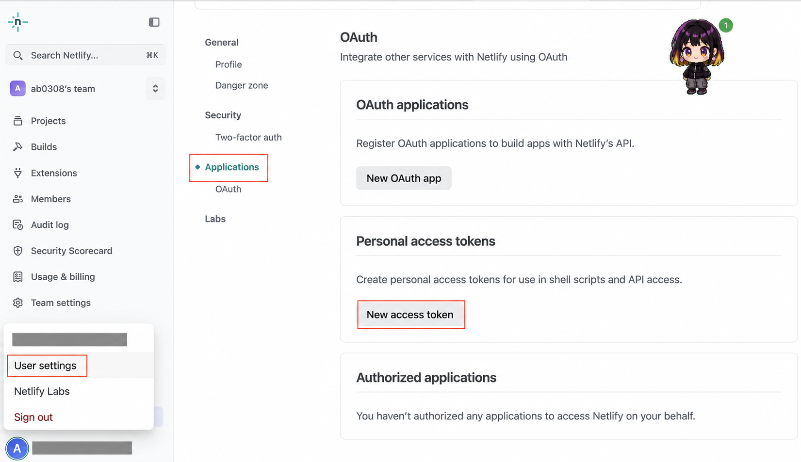

ChatGPT AI Agent Part 4 · 進階
Padlet MCP、Gemini Notebook MCP、Netlify MCP 與網頁遊戲上架
新北市大豐國小 · 許凱琳老師
CONNECT
官方做好的連接，登入授權後就能使用，例如 Google、GitHub、Notion、Canva。
AI 與外部工具的「標準插頭」；自己加入伺服器，連接更多服務。
教 AI 一套可重複使用的 SOP。
在指定時間重複執行已穩定的流程。
PLUGINS
讀取與管理程式專案、建立網頁版本紀錄，搭配 GitHub Pages 發布網站。
搜尋與整理 Notion 頁面、資料庫，把成果寫回筆記。
Gmail、Google 雲端硬碟、日曆、文件、試算表：讀信、找檔、排行程。
搜尋與建立 Canva 設計，把內容套進範本做成海報或簡報。
⚠️ SECURITY
MCP 1
建立互動牆、整理回應、草擬個別回饋
Padlet MCP
先從應用程式或外掛程式連接 Padlet。
若講師採用自訂 MCP，依專案最新說明安裝。
PADLET · TASK ①
MCP 2
讓 Agent 幫你建立筆記本、加入來源、產生語音摘要
Gemini Notebook MCP
教材原檔：01-連接-NotebookLM.md。
原文寫給 Claude Code／opencode，請 Codex 先閱讀、檢查環境，再按目前方式調整。
先看安裝計畫，確認後才執行。不要直接建立或刪除測試筆記本。
提示詞
Gemini Notebook 實作
MCP 3
從一句需求開始，完成可玩、可驗收、可分享的網頁遊戲
Codex 進階
先講解 Work 與 Codex 的差別，再以 Codex 示範製作與測試。玩法可依研習當天調整。
Codex 進階
Codex 進階
Codex 進階・補充資料
另一種教學網頁範例：輸入教材主題與參考資料，規劃環景場景、知識點及思考題。
可生成圖片、加入自己的 360 照片，設定標示點，預覽後匯出教材網站與專案檔。
NETLIFY
Netlify MCP
SECURITY

Netlify 預覽
Netlify 發布
請自己用電腦與手機玩完一局，再確認正式發布。
AGENT · SKILL
已經驗證過、之後會重複使用，而且有清楚輸入、步驟與驗收方式的流程。
將「檢查網頁遊戲 → 建立 Netlify 預覽 → 回報驗收清單」做成重複流程。
AGENT · PROJECT RULES
AGENTS.md 是有特定用途的 Markdown 檔；不是 Agent 寫的每一個 .md 檔都叫 AGENTS.md。AGENT · HANDOFF
請把目前專案整理成 handoff.md，包含專案目標、已完成功能、重要檔案、已做過的測試、Netlify 部署狀態、尚未解決的問題與建議下一步。不要修改遊戲內容，不要寫入 Token 或密碼。
AGENTS.md 與 handoff.md，盤點現況，再提出接續計畫。接上工具 🔌
外掛一鍵授權、MCP 自己接；授權用官方流程，Token 絕不公開
下一集 Part 5：結語，使用 AI Agent 的想法、流程與安全